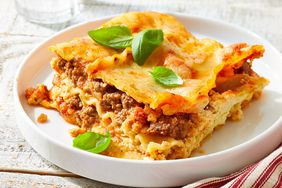

Lasagna

Description
This lasagna with uncooked noodles delivers all the cheesy payoff of the classic, using jarred sauce to soften
the noodles right in the oven without an extra pot.
Home
Ingredients
- 1 pound lean ground beef
- 1 onion, chopped
- 1 (4.5 ounce) can mushrooms, drained
- 1 (28 ounce) jar spaghetti sauce
- 1 (16 ounce) package lasagna noodles
- 8 ounces shredded mozzarella cheese, divided